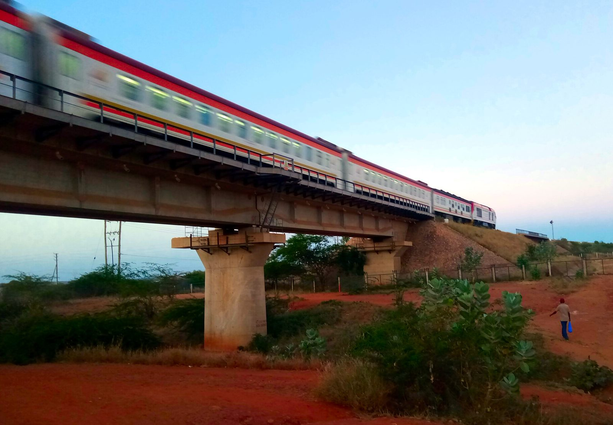

Start with one infrastructure project. The test shows what is visible, what cannot yet be judged, and what needs to be published next.

Run the Kenya SGR through the Project Publication Testteaching example
- Records needed to test value
- Loan agreement, repayment schedule, guarantee terms, appraisal assumptions
- Can the value be judged?
- Not from the public records reviewed — the key terms are not yet published.
- The request to make
- Publish the financing terms and appraisal assumptions needed to assess value for money.
- Partner action
- Check which records are already public, then choose one project to test next.
CIPEA method partners can repeat on other projects
IEA-KenyaValue-for-money analysis turned into usable evidence
CoSTThe project information needed to run the test
PartnersOne clear request they can validate and use